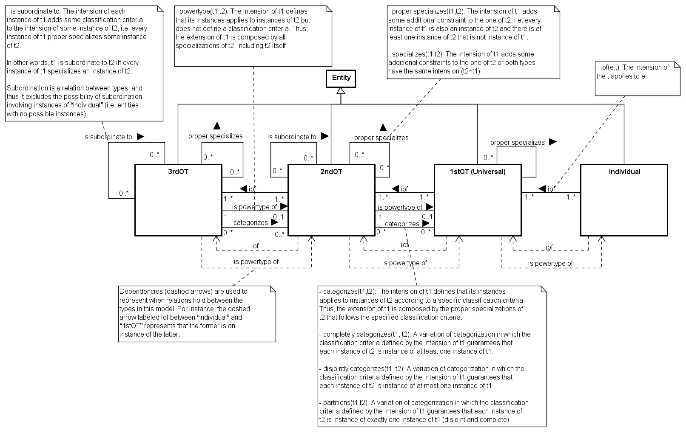
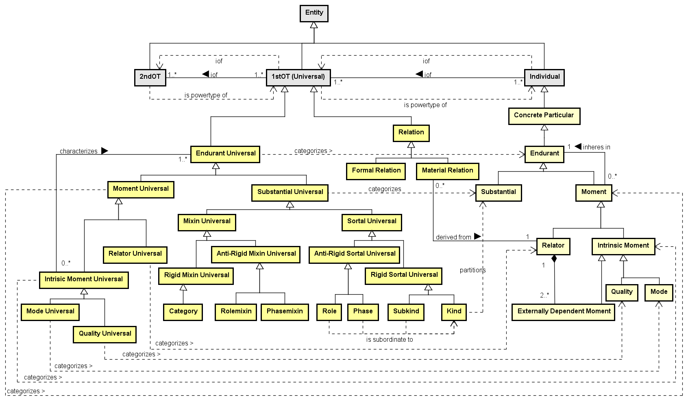
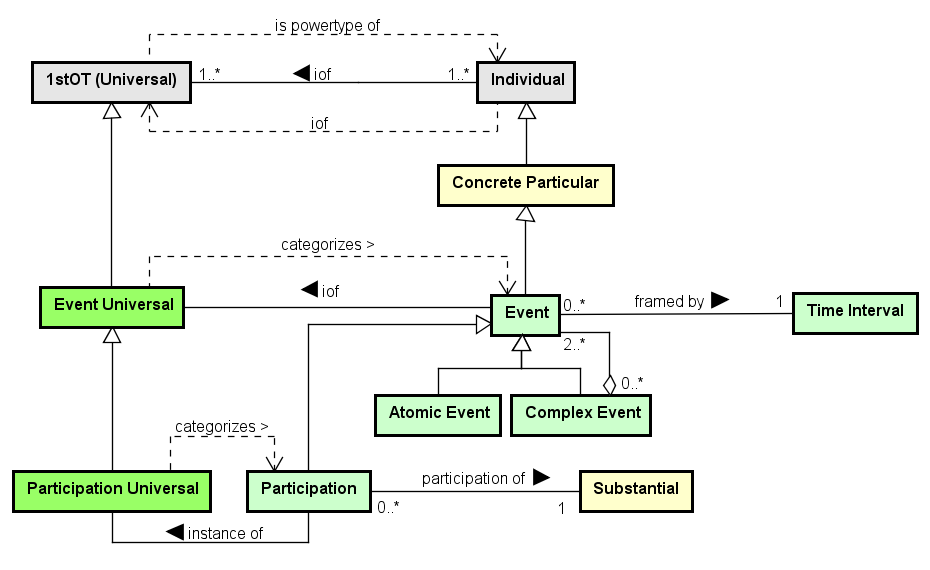

SEON: Networked Ontology Specification
Unified Foundational Ontology (UFO)
1. Ontology Description
The Unified Foundational Ontology (UFO) is developed based on a number of theories from Formal Ontology, Philosophical Logics, Philosophy of Language, Linguistics and Cognitive Psychology. UFO is divided in three parts: an ontology of endurants (objects), an ontology of perdurants (events), and an ontology of social entities. UFO's ontological distinctions are used for classifying SEON concepts, e.g., as objects, actions, co mmitments, agents, roles, goals and so on. UFO provides the necessary grounding for the concepts and relations of all networked ontologies.
This specification is being documented. For further details on UFO, see doc.utwente.nl/50826/1/thesis_Guizzardi.pdf.
2. Related Ontologies
Networked ontologies used by UFO:
| Ontology |
Relation |
Integration Level |
3. Ontology Models
Figure 1 presents the conceptual model of the MLT subontology.

Figure 1. MLT conceptual model.
Figure 2 presents the conceptual model of the UFO-A subontology.

Figure 2. UFO-A conceptual model.
Figure 3 presents the conceptual model of the UFO-B subontology.

Figure 3. UFO-B conceptual model.
Figure 4 presents the conceptual model of the Mental Moments subontology.

Figure 4. Mental Moments conceptual model.
4. Concepts Definition
The following table shows the definitions for UFO concepts.
Detailed Concepts
UFO::1stOT (Universal)
Specializes UFO::Entity
Relations:
1stOT (Universal) (1..*) iof (1..*) 2ndOT
1stOT (Universal) proper specializes (0..*) 1stOT (Universal)
2ndOT (1..1) is powertype of (0..1) 1stOT (Universal)
2ndOT (0..*) categorizes (0..*) 1stOT (Universal)
Individual (1..*) iof (1..*) 1stOT (Universal)
UFO::2ndOT
Specializes UFO::Entity
Relations:
2ndOT (1..*) iof (1..*) 3rdOT
2ndOT (0..*) is subordinate to (0..*) 2ndOT
2ndOT (0..*) proper specializes (0..*) 2ndOT
2ndOT (1..1) is powertype of (0..1) 1stOT (Universal)
2ndOT (0..*) categorizes (0..*) 1stOT (Universal)
1stOT (Universal) (1..*) iof (1..*) 2ndOT
3rdOT (1..1) is powertype of (0..1) 2ndOT
3rdOT (0..*) categorizes (0..*) 2ndOT
UFO::3rdOT
Specializes UFO::Entity
Relations:
3rdOT (0..*) is subordinate to (0..*) 3rdOT
3rdOT (0..*) proper specializes (0..*) 3rdOT
3rdOT (1..1) is powertype of (0..1) 2ndOT
3rdOT (0..*) categorizes (0..*) 2ndOT
2ndOT (1..*) iof (1..*) 3rdOT
UFO::Abstract Thing
Specializes
UFO::Action
Specializes UFO::Event
Relations:
Action (0..*) caused by (1..1) Intention
Action instance of Action Universal (Plan)
Social Commitment causes Action
UFO::Action Contribution
Specializes UFO::Action, UFO::Agent Participation
UFO::Action Universal (Plan)
Specializes UFO::Event Universal
Relations:
Action instance of Action Universal (Plan)
Closed Commitment Universal based on (1..1) Action Universal (Plan)
Closed Commitment (0..*) based on (1..1) Action Universal (Plan)
Complex Action Universal (0..*) <>-- (2..*) Action Universal (Plan)
UFO::Agent
Specializes UFO::Substantial
Relations:
Intentional Moment (1..*) inheres in (1..1) Agent
Agent Participation (0..*) participation of (1..1) Agent
Social Commitment (0..*) external dependence (1..*) Agent
UFO::Agent Participation
Specializes UFO::Participation
Relations:
Agent Participation (0..*) participation of (1..1) Agent
| Anti-Rigid Mixin Universal |
UFO::Anti-Rigid Mixin Universal
Specializes UFO::Mixin Universal
| Anti-Rigid Sortal Universal |
UFO::Anti-Rigid Sortal Universal
Specializes UFO::Sortal Universal
UFO::Appointment
Specializes UFO::Commitment
Relations:
Appointment (0..*) /refers to (1..1) Time Interval
Complex Closed Appointment <>-- (2..*) Appointment
Appointment Goal (1..1) propositional content of (1..*) Appointment
UFO::Appointment Goal
Specializes UFO::Goal
Relations:
Appointment Goal (0..*) refers to (1..1) Time Interval
Appointment Goal (1..1) propositional content of (1..*) Appointment
UFO::Atomic Action
Specializes UFO::Atomic Event, UFO::Action
Relations:
Atomic Action instance of (1..1) Atomic Action Universal
UFO::Atomic Action Universal
Specializes UFO::Action Universal (Plan)
Relations:
Atomic Action instance of (1..1) Atomic Action Universal
UFO::Atomic Event
Specializes UFO::Event
UFO::Belief
Specializes UFO::Mental Moment
UFO::Category
Specializes UFO::Rigid Mixin Universal
UFO::Change
Specializes UFO::Object Participation
UFO::Closed Appointment
Specializes UFO::Closed Commitment, UFO::Appointment
UFO::Closed Commitment
Specializes UFO::Commitment
Relations:
Closed Commitment (0..*) based on (1..1) Action Universal (Plan)
Closed Commitment instance of Closed Commitment Universal
Complex Closed Commitment <>-- (2..*) Closed Commitment
| Closed Commitment Universal |
UFO::Closed Commitment Universal
Specializes UFO::Commitment Universal
Relations:
Closed Commitment Universal based on (1..1) Action Universal (Plan)
Normative Description (1..1) defines (0..*) Closed Commitment Universal
Closed Commitment instance of Closed Commitment Universal
UFO::Collective Social Agent
Specializes UFO::Social Agent
UFO::Commitment
Specializes
Relations:
Commitment instance of Commitment Universal
Complex Commitment (0..*) <>-- (2..*) Commitment
UFO::Commitment Universal
Specializes
Relations:
Commitment instance of Commitment Universal
UFO::Complex Action
Specializes UFO::Complex Event, UFO::Action
Relations:
Complex Action instance of (0..1) Complex Action Universal
Complex Action <>-- (2..*) Participation
UFO::Complex Action Universal
Specializes UFO::Action Universal (Plan)
Relations:
Complex Action Universal (0..*) <>-- (2..*) Action Universal (Plan)
Complex Closed Commitment based on Complex Action Universal
Complex Action instance of (0..1) Complex Action Universal
Plan Description (0..1) describes (1..*) Complex Action Universal
| Complex Closed Appointment |
UFO::Complex Closed Appointment
Specializes UFO::Closed Appointment, UFO::Complex Closed Commitment
Relations:
Complex Closed Appointment <>-- (2..*) Appointment
| Complex Closed Commitment |
UFO::Complex Closed Commitment
Specializes UFO::Closed Commitment
Relations:
Complex Closed Commitment based on Complex Action Universal
Complex Closed Commitment <>-- (2..*) Closed Commitment
UFO::Complex Commitment
Specializes UFO::Commitment
Relations:
Complex Commitment (0..*) <>-- (2..*) Commitment
UFO::Complex Event
Specializes UFO::Event
Relations:
Complex Event (0..*) <>-- (2..*) Event
| Composed Quality Universal |
UFO::Composed Quality Universal
Specializes UFO::Quality Universal
Relations:
Composed Quality Universal (0..*) <>-- (2..*) Quality Universal
UFO::Concrete Particular
Specializes UFO::Individual
UFO::Creation
Specializes UFO::Object Participation
UFO::Delegation
Specializes UFO::Material Relation
Relations:
Delegation (0..*) derived from (1..1) Delegatum
UFO::Delegatum
Specializes UFO::Social Relator
Relations:
Delegation (0..*) derived from (1..1) Delegatum
UFO::Desire
Specializes UFO::Mental Moment
UFO::Disposition
Specializes
UFO::Endurant
Specializes UFO::Concrete Particular
Relations:
Moment (0..*) inheres in (1..1) Endurant
UFO::Endurant Universal
Specializes UFO::1stOT (Universal)
Relations:
Intrisic Moment Universal (0..*) characterizes (1..*) Endurant Universal
UFO::Entity
Specializes
Relations:
Entity (1..*) characterized by (0..*) Moment Universal
UFO::Event
Specializes UFO::Concrete Particular
Relations:
Event iof Event Universal
Event (0..*) framed by (1..1) Time Interval
Complex Event (0..*) <>-- (2..*) Event
UFO::Event Universal
Specializes UFO::1stOT (Universal)
Relations:
Event iof Event Universal
UFO::Expression
Specializes
Relations:
Scientific Measurement Domain (1..1) has (1..1) Expression
| Externally Dependent Moment |
UFO::Externally Dependent Moment
Specializes UFO::Intrinsic Moment
Relations:
Relator (1..1) <>-- (2..*) Externally Dependent Moment
UFO::Formal Relation
Specializes UFO::Relation
UFO::Fulfilled
Specializes
UFO::Function
Specializes UFO::Set
Relations:
Function (0..*) instance of (1..*) Function Universal
UFO::Function
Specializes UFO::Disposition
Relations:
Function (0..*) instance of (1..*) Function Universal
UFO::Function Universal
Specializes
Relations:
Function (0..*) instance of (1..*) Function Universal
UFO::Goal
Specializes UFO::Proposition
Relations:
Goal (1..1) propositional content of (1..*) Intention
Measurement Goal (0..*) based on (1..*) Goal
Complex Goal (0..*) <>-- (1..*) Goal
UFO::High Order Universal
Specializes
UFO::Higher-Order Object Kind
Specializes
Relations:
Object Kind instance of Higher-Order Object Kind
UFO::Individual
Specializes UFO::Entity
Relations:
Individual (1..*) iof (1..*) 1stOT (Universal)
UFO::Intention
Specializes UFO::Commitment, UFO::Mental Moment
Relations:
Intention instance of Internal Commitment Universal
Goal (1..1) propositional content of (1..*) Intention
Action (0..*) caused by (1..1) Intention
UFO::Intentional Moment
Specializes UFO::Intrinsic Moment
Relations:
Intentional Moment (1..*) inheres in (1..1) Agent
Proposition (1..1) propositional content of (0..*) Intentional Moment
| Internal Closed Commitment Universal |
UFO::Internal Closed Commitment Universal
Specializes UFO::Internal Commitment Universal, UFO::Closed Commitment Universal
| Internal Commitment Universal |
UFO::Internal Commitment Universal
Specializes UFO::Commitment Universal
Relations:
Intention instance of Internal Commitment Universal
UFO::Interval MeaRefDimension
Specializes UFO::Measurement Reference Dimension
UFO::Intrinsic Moment
Specializes UFO::Moment
| Intrisic Moment Universal |
UFO::Intrisic Moment Universal
Specializes UFO::Moment Universal
Relations:
Intrisic Moment Universal (0..*) characterizes (1..*) Endurant Universal
UFO::Kind
Specializes UFO::Rigid Sortal Universal
UFO::Material Relation
Specializes UFO::Relation
Relations:
Material Relation (0..*) derived from (1..1) Relator
| Measurable Quality Universal |
UFO::Measurable Quality Universal
Specializes UFO::Quality Universal
| Measurement Quality Domain |
UFO::Measurement Quality Domain
Specializes UFO::Measurement Quality Structure
| Measurement Quality Region |
UFO::Measurement Quality Region
Specializes UFO::Quality Region
Relations:
Measurement Quality Structure (1..1) <>-- (2..*) Measurement Quality Region
| Measurement Quality Structure |
UFO::Measurement Quality Structure
Specializes UFO::Quality Structure
Relations:
Measurement Quality Structure (1..1) <>-- (2..*) Measurement Quality Region
| Measurement Reference Dimension |
UFO::Measurement Reference Dimension
Specializes UFO::Measurement Reference Structure
| Measurement Reference Region |
UFO::Measurement Reference Region
Specializes
Relations:
Measurement Reference Structure (1..1) <>-- (2..*) Measurement Reference Region
| Measurement Reference Structure |
UFO::Measurement Reference Structure
Specializes UFO::Reference Structure
Relations:
Measurement Reference Structure (1..1) <>-- (2..*) Measurement Reference Region
Measurement Reference Structure (1..*) partitioned according to (0..1) Unit
UFO::Mental Moment
Specializes UFO::Intentional Moment
UFO::Mixin Universal
Specializes UFO::Substantial Universal
UFO::Mode
Specializes UFO::Intrinsic Moment
UFO::Mode Universal
Specializes UFO::Intrisic Moment Universal
UFO::Moment
Specializes UFO::Endurant
Relations:
Moment (0..*) inheres in (1..1) Endurant
UFO::Moment Universal
Specializes UFO::Endurant Universal
Relations:
Entity (1..*) characterized by (0..*) Moment Universal
UFO::Normative Description
Specializes UFO::Social Object
Relations:
Normative Description (0..*) recognized by (1..*) Social Agent
Normative Description (0..1) defines (0..*) Social Role
Normative Description (1..1) defines (0..*) Closed Commitment Universal
Normative Description (0..1) defines (0..*) Social Object
UFO::Object
Specializes UFO::Substantial
Relations:
Object instance of Object Kind
Object Participation (0..*) participation of (1..1) Object
UFO::Object Kind
Specializes UFO::Kind
Relations:
Object Kind instance of Higher-Order Object Kind
Object instance of Object Kind
UFO::Object Participation
Specializes UFO::Participation
Relations:
Object Participation (0..*) participation of (1..1) Object
UFO::Ordinal MeaRefDimension
Specializes UFO::Measurement Reference Dimension
UFO::Participation
Specializes UFO::Event
Relations:
Participation (0..*) participation of (1..1) Substantial
Participation instance of Participation Universal
Complex Action <>-- (2..*) Participation
UFO::Participation Universal
Specializes UFO::Event Universal
Relations:
Participation Universal (1..1) induces (1..1) Processual Role
Participation instance of Participation Universal
UFO::Person
Specializes UFO::Physical Agent
Same as UFO::Human Agent
A human Physical Agent.
Ex.: Tim Berners Lee, Dennis Ritchie, Donald Knuth.
UFO::Phase
Specializes UFO::Anti-Rigid Sortal Universal
UFO::Phasemixin
Specializes UFO::Anti-Rigid Mixin Universal
<<category>>
Physical Agent |
UFO::Physical Agent
Specializes UFO::Agent
UFO::Physical Object
Specializes UFO::Object
UFO::Plan Description
Specializes UFO::Normative Description
Relations:
Plan Description (0..1) describes (1..*) Complex Action Universal
UFO::Processual Role
Specializes
Relations:
Participation Universal (1..1) induces (1..1) Processual Role
Substantial (0..*) (0..*) Processual Role
UFO::Proposition
Specializes
Relations:
Proposition (1..1) propositional content of (0..*) Intentional Moment
UFO::Quality
Specializes UFO::Intrinsic Moment
UFO::Quality Region
Specializes
Relations:
Quality Structure (1..1) <>-- (2..*) Quality Region
UFO::Quality Structure
Specializes UFO::Set
Relations:
Quality Structure (1..1) <>-- (2..*) Quality Region
Reference Structure (0..*) associated to (1..1) Quality Structure
UFO::Quality Universal
Specializes UFO::Intrisic Moment Universal
Relations:
Composed Quality Universal (0..*) <>-- (2..*) Quality Universal
UFO::Rational MeaRefDimension
Specializes UFO::Measurement Reference Dimension
UFO::Reference Structure
Specializes UFO::Set
Relations:
Reference Structure (0..*) associated to (1..1) Quality Structure
UFO::Relation
Specializes UFO::1stOT (Universal)
UFO::Relator
Specializes UFO::Moment
Relations:
Relator (1..1) <>-- (2..*) Externally Dependent Moment
Material Relation (0..*) derived from (1..1) Relator
UFO::Relator Universal
Specializes UFO::Moment Universal
UFO::Rigid Mixin Universal
Specializes UFO::Mixin Universal
UFO::Rigid Sortal Universal
Specializes UFO::Sortal Universal
UFO::Role
Specializes UFO::Anti-Rigid Sortal Universal
UFO::Rolemixin
Specializes UFO::Anti-Rigid Mixin Universal
| Scientific Measurement Domain |
UFO::Scientific Measurement Domain
Specializes UFO::Measurement Quality Domain
Relations:
Scientific Measurement Domain (1..1) has (1..1) Expression
UFO::Self Appointment
Specializes UFO::Intention, UFO::Appointment
UFO::Set
Specializes UFO::Abstract Thing
UFO::Simple Quality Universal
Specializes UFO::Quality Universal
UFO::Situation
Specializes
<<category>>
Social Agent |
UFO::Social Agent
Specializes UFO::Agent
Relations:
Normative Description (0..*) recognized by (1..*) Social Agent
UFO::Social Appointment
Specializes UFO::Appointment, UFO::Social Commitment
UFO::Social Commitment
Specializes UFO::Social Moment, UFO::Commitment
Relations:
Social Commitment causes Action
Social Commitment (0..*) external dependence (1..*) Agent
UFO::Social Moment
Specializes UFO::Intentional Moment, UFO::Externally Dependent Moment
Relations:
Social Relator <>-- (2..*) Social Moment
UFO::Social Object
Specializes UFO::Object
Relations:
Normative Description (0..1) defines (0..*) Social Object
UFO::Social Relator
Specializes UFO::Relator
Relations:
Social Relator <>-- (2..*) Social Moment
UFO::Social Role
Specializes UFO::Role
Relations:
Normative Description (0..1) defines (0..*) Social Role
UFO::Sortal Universal
Specializes UFO::Substantial Universal
UFO::Subkind
Specializes UFO::Rigid Sortal Universal
UFO::Substantial
Specializes UFO::Endurant
Relations:
Substantial (0..*) (0..*) Processual Role
Participation (0..*) participation of (1..1) Substantial
UFO::Substantial Universal
Specializes UFO::Endurant Universal
UFO::Time Interval
Specializes
Relations:
Scheduled Activity (0..*) refers to (1..1) Time Interval
Event (0..*) framed by (1..1) Time Interval
Scheduled Process (0..*) refers to (1..1) Time Interval
Stakeholder Allocation (1..*) framed by (1..1) Time Interval
Appointment (0..*) /refers to (1..1) Time Interval
Appointment Goal (0..*) refers to (1..1) Time Interval
UFO::Unfulfilled
Specializes
UFO::Unit
Specializes UFO::Measurement Quality Region
Relations:
Measurement Reference Structure (1..*) partitioned according to (0..1) Unit
UFO::Usage
Specializes UFO::Object Participation
UFO::xOrganization
Specializes UFO::Social Agent
Unified Foundational Ontology (UFO)
Mon Sep 25 21:34:15 BRT 2017